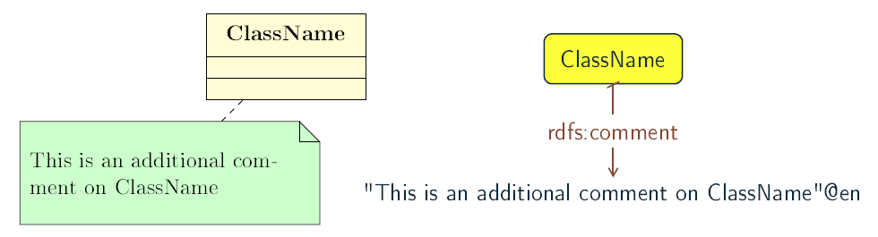

Transformation of UML descriptors
In this section are specified transformation rules for UML descriptive elements. Table 1 provides an overview of the section coverage.
| UML element | Rules in core ontology layer | Rules in data shape layer | Rules in reasoning layer |
|---|---|---|---|
Name |
|||
Note |
|||
Comment |
Name
Most of the UML elements are named. The UML conventions dedicate an extensive section to the naming conventions and how deterministically to generate an URI and a label from the UML element name. The label should be associated to the resource URI by rdfs:label and, even if redundant, also as skos:prefLabel.
Specify a label for UML element.
Listing 1. Labels in Turtle syntax
|
Listing 2. Labels in RDF/XML syntax
|
Note
Most of the UML element foresee provisions of descriptions and notes. They should be transformed into rdfs:comment and skos:definition.
Specify a description for UML element.
Listing 3. Description in Turtle syntax
|
Listing 4. Description in RDF/XML syntax
|
Comment
In accordance with , every kind of UML Element may own Comments (see Figure 1). They add no semantics but may represent information useful to the reader. In OWL it is possible to define the annotation axiom for OWL Class, Datatype, ObjectProperty, DataProperty, AnnotationProperty and NamedIndividual. The textual explanation added to UML Class is identified as useful for conceptual modelling , therefore the Comments that are connected to UML Classes are taken into consideration in the transformation.

As UML Comments add no semantics, they are not used in any method of semantic validation. In OWL the AnnotationAssertion axiom does not add any semantics either, and it only improves readability.
Specify annotation axiom for UML Comment associated to a UML element.
Listing 5. Comment in Turtle syntax
|
Listing 6. Comment in RDF/XML syntax
|